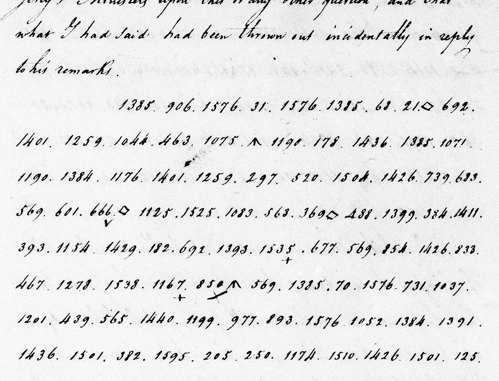

At a glanceKnown key applied · complete
- The document
- Alexander H. Everett’s “Notes of a Conversation of Mr. Everett with Mr. Zea”, enclosed with his despatch No. 7 to Henry Clay, Madrid, 25 September 1825. Six passages are in code among clear English: 1,201 number groups.
- Where
- National Archives (NARA), RG 59, Despatches from U.S. Ministers to Spain, vol. 25, microfilm M31 roll 27, frames 0112–0115 and 0119–0121. The copy is endorsed as the duplicate. It was catalogue item 638 here; it is not on DECODE.
- The cipher
- The State Department’s numerical code: 1,600 numbers for words, syllables and letters (the = 1385). Marks under and after a number double a letter, withdraw one, or add an ending.
- How it was deciphered
- With the code’s surviving sheet (NARA M97 roll 13) and the rules for the marks printed on it, applied to three independent transcriptions collated into one. The Department’s own decipherment of the time, of all six passages, is on the same reel (frames 0110–0111).
- What it says
- Zea is able, hard-working and liberal in conversation, and privately well disposed to recognition, but he cannot risk his place: “there is a strong power somewhere act[ing] in a contrary direction”.
- Still open
- 26 words where the code as written does not give the word: a wrong number, a figure left out, a missing syllable, a tick under another figure than the word needs, and two numbers written over or blotted. No person has checked a reading against the film.
- Credit
- A clerk of the State Department deciphered all six passages at the time; at a few places he left what the key gave, and some of his line ends are lost in the binding. WAINUT (pages 14 to 18) and Brice Dudout (all six passages) deciphered them again on 27 October 2026, independently and before the clerk’s text had been found, each with the table rebuilt for John Quincy Adams’s despatches. Andrew Beling found the clerk’s decipherment, transcribed the code sheet and compared the three transcriptions. All six passages were deciphered here in full with the surviving code sheet on 24 November 2026.
01 The Notes and their code
Everett kept notes of his first conversation with Zea and sent them to Washington with his despatch No. 7 of 25 September 1825. The copy on the microfilm is endorsed as the duplicate. Most of it is clear English. Six passages are in figures: three words in the middle of page 1 and eight lines at its foot, the foot of page 2 with the head of page 3, the foot of page 3 with pages 4 and 5 entire and the head of page 6, a passage across pages 14 and 15, and 26 lines on pages 17 and 18, written after the word “End” and before the account of a second conversation.
William R. Manning printed the Notes as an extract in 1925 (Diplomatic Correspondence of the United States concerning the Independence of the Latin-American Nations, vol. III, doc. 1134). He gives the passage of pages 14 and 15 as “[Here follow six lines in cipher, without decodification.]” and does not print or mention the passage on pages 17 and 18. Brice Dudout reports that the coded pages were not printed in American State Papers in 1826 either; that was not checked here.

The three passages on pages 14 to 18 were catalogue item 638. The four on pages 1 to 6 were found when the neighbouring frames were opened during the review of WAINUT’s contribution: about 80 lines more. In all there are 1,201 groups, 444 different numbers.
02 The code sheet and its marks
The numbers are those of the State Department’s code, in which 1385 is the and 1576 of. It is the code of John Quincy Adams’s despatches from St Petersburg of 1811 and 1812, whose table was rebuilt on this site from the Department’s decodes and Ford’s printed decipherments before the sheet was known here. A sheet of the code survives on NARA microfilm M97 roll 13 (frames 1056 and 1057; Ralph E. Weber printed it in 1979 as WE028), and Andrew Beling’s transcription of it was first used for Anthony Morris’s despatches of 1814 and 1815, which are in a copy of the same code with its blocks of a hundred in reverse order.
The sheet gives a value to every number in Everett’s six passages except 1601, which is not a number of the code at all. Among them are the eight that the rebuilt table lacked: 125 contrary, 126 convey, 211 pret, 258 spi, 850 dispose, 917 os, 1354 br, 1512 acy. Four rows of the transcription were corrected for this work: the alphabetical half of the sheet prints sim 233, sin 234 and shal 1093, and 681 is are on its numerical half.

So the marks belong to the key. Everett uses all four, and all but two of the marked groups in the Notes come out by the printed rules (the two are under the table):
| Group | Value on the sheet | Marks | Gives | Word |
|---|---|---|---|---|
| 666 | zeal | a tick | Zea | M. Zea |
| 1178 | whither | two ticks | white | the white of the ball |
| 1034 | claim | two ticks | cli | dis-in-cli-nation |
| 1441 | Italy | two ticks | ity | ob-sc-ur-ity |
| 769 | Turkey | two ticks | ture | ven-ture |
| 117 | connexion | three ticks | connex | connex-ed |
| 231 | put | a tick | pt | ke-pt |
| 251 | son | a cross | soon | soon |
| 466 | uge | a cross and a tick | ugg | str-ugg-ling |
| 1082 | sem | a cross, a lozenge | seems | seems |
| 850 | dispose | a stroke under the last figure, a caret | disposed | disposed |
The printed rule ties the letter to the figure the mark stands under. Here the letter doubled or withdrawn was taken from the word. Seven marks were looked at on the frames in the review of this page on 24 November 2026, by an AI model that knew the candidates. Five stand where the rule needs them (under 769, 256, 457, 982 and 1086). Two do not. Under 1359 bring in des-cri-bing the tick stands under the 3, which withdraws the i (brng); under 800 dous in ind-us-trious it stands under the first 0, which withdraws the u (dos). Those two words are counted as holes. The other marks were not measured.
03 What the passages say
The lines that Manning left in figures come directly after the words “an interference of Providence”, at the end of Zea’s argument. Square brackets mark what the code as written does not give:
I did not think it necessary to enter very fully into the argument with M. Zea upon this subject, more especially as I was pretty well satisfied from the [ten]or of his remarks that they did not convey his real sentiments, and were merely a language imposed upon him at present by particular circumstances.
Page 1 has the same thought at the start. The Minister’s frankness is “real or assumed”, and “He said [many] things to me which I am quite certain he could not really believe himself, and which suppose of course dissimulation; but all persons, especially those in public life, are compelled at times to do this to a certain extent.”
Pages 2 and 3 give his rise: “he was brought into the cabinet by the influence of Ugarte, who was himself a creature [of] Russia. M. Zea however soon broke with his patron, and finally succeeded in removing him from the country by sending him on a mission to Turin.” Then comes a portrait that runs to the head of page 6. Zea is “rather above the middle height, of robust but somewhat inelegant proportions, and bald headed”; his teeth are good, “a thing rare among the Spaniards, most of whom, beginning with the King, ruin their teeth by excessive smoaking”. He speaks French fluently and is well versed in English, which he speaks at times, and has “less of the peculiar air and manner of a Spaniard” than any Spaniard Everett has met. His conversation is liberal, so that when he advances “any grossly illiberal and antiquated notion” he must be “holding for some particular purpose a language foreign to his opinions”. He shares the disinclination to the clergy that goes with such principles, “which suits but indifferently with the policy of a Spanish Minister”, and he told Everett “that he labored incessantly the whole of every day, and two or three nights in the week besides”. If he is overthrown soon by the rival party “he will sink into obscurity”; should he hold his place for some years, “I am inclined to think that his administration will form an epoch in the history of the monarchy.”
The passage after “End” is the political reading:
Supposing him, as they all appear to do, individually well disposed to the necess[ity] of recognition, it would follow of course that there is a strong power somewhere act[ing] in a contrary direction. The probability seems to be that he cannot venture to risk his place at present by shewi[ng] any liberality on this head.
It seems to be also understood that the influence of the Emperor Alexander [is] directed against a recognition. I have not yet had occasion to converse upon the subject with M. de Oubril, the Russia[n] Minister. The policy of Russia in this respect is attributed by some of the Ministers to a spi[rit] of opposition to England rather [than] to the sacred regard for legitimacy which the Emperor assumes, I believe, as his ostensible motive.
The whole text of the six passages, with the numbers and their values line by line, is under .
04 How it was deciphered
The work was done in four steps by four hands, all with AI models.
- 27 October 2026, WAINUT. The three passages of pages 14 to 18, 355 groups, transcribed from the frames and decoded with the table rebuilt for Adams’s code, unchanged: 347 groups had a value, and the text ran as English with some words from context. With the true table the share of function words was 0.37; with every number shifted, or the table permuted, it was between 0.02 and 0.12.
- 27 and 28 October 2026, Brice Dudout (Europe chiffrée). All six passages, independently and with the same table, after he had tested it on Everett’s despatch of 8 September 1825 against the Department’s decoding printed by Manning: 288 of 304 groups agreed. He proposed the missing values from the alphabetical order of the code and from the sense.
- 22 November 2026, Andrew Beling (the day it was contributed). The State Department’s own decipherment of all six passages, found on the two frames before the Notes (section 05); a third transcription of the groups, made in October, compared with the other two (1,113 groups in common with Dudout’s files, 27 different); and each of the 27 read on the film by an AI reader that was given no candidates, the doubtful ones by a second. The film had Dudout’s digits at 18 places and Beling’s at 8, with one undecided.
- 24 November 2026, here. The code sheet applied to every group, its printed rules read on the frame, and the three transcriptions collated into one. Of the eight places where the film check went against Dudout’s files, six were taken into the collated text: at each the value on the sheet and the Department clerk’s word agree with Andrew Beling’s digits, and the blind film check excludes Dudout’s (623 to 628 me, 433 to 458 ve, 843 to 845 dis, 1031 to 1081 self, 1364 to 1564 observe, 330 to 880 li). 628 and 1564 rest on one blind reader; at 845 and 880 one of the two readers took the first digit for a 3, and at 458 one was unsure of the middle digit. Two were not taken: the group under “describing” and the group for “than” (section 06). The clerk’s word was one of the grounds for the choice at nine places: these eight, and 1385 against 1345 in “the correct principles”, where the film check was split. No word counted as given by the key rests on him alone. The frames were looked at again for these places and for every slip named below, by an AI agent that knew the candidates.
The earlier readings were measured against the rebuilt table, where a value proposed from the alphabetical order or from the sense counts as a hole: 0.904 for pages 14 to 18, and four of the first six pages just under 95%. Against the sheet most of those values are the key’s own. The count below is of words in the coded passages; a word with a bracket in it is a hole.
| Manuscript page | Coded words | Holes | Share given by the key |
|---|---|---|---|
| 1 | 57 | 1 | 0.982 |
| 2 | 35 | 1 | 0.971 |
| 3 | 94 | 1 | 0.989 |
| 4 | 158 | 5 | 0.968 |
| 5 | 173 | 8 | 0.954 |
| 6 | 70 | 1 | 0.986 |
| 14 and 15 | 54 | 1 | 0.981 |
| 17 | 112 | 4 | 0.964 |
| 18 | 91 | 4 | 0.956 |
| Pages 1 to 6 | 587 | 17 | 0.971 |
| Pages 14 to 18 | 257 | 9 | 0.965 |
| All six passages | 844 | 26 | 0.969 |
The class depends on counting 17 words as given by the key under the site’s rules for spellings and for one-digit slips (the 13 spellings and four of the five slips in section 06); counted as holes they would bring all six passages to 801 of 844 (0.949), and pages 14 to 18 to 244 of 257 (0.949), just under the 95% bar.
On 23 November 2026 the entry was split in two, with pages 1 to 6 classed as taken from an existing decipherment. That was decided before the code sheet was applied, and the Department’s decipherment covers pages 14 to 18 as well. With the sheet both parts are deciphered with the known key, so the split was withdrawn on 24 November. The clerk’s decipherment of the time still comes before every reading made here.
A second AI agent, which had not made the collated reading, read it as sentences and checked every line against the key output. It found two places where the reading departed from the key without a mark, refine[d] and Minister[s], which are now holes, and asked for the same standard for the doubt on 1057 and for all the one-digit slips; all four changes were made. A third AI agent then checked this page against its sources, recounted the words and looked at the frames; on its findings [the], des-cri-b[i]ng and ind[u]strious were moved to the holes, which brought the count from 821 to 818.
05 The Department’s decipherment
On frames 0110 and 0111, just before the Notes, a clerk of the Department wrote out the six passages in clear, in six parts; the last two are headed “5 part” and “6 part”, with the manuscript pages “14 & 15” and “17 & 18” noted faintly in the margin. Who wrote it, and when, is not known. A pencil “Decyphered” stands at the foot of page 4 of the Notes.

The clerk worked from the same key and met the same faults in the code. Where Everett wrote 1525 agent for 1535 al, the clerk wrote “person agent” and corrected it; where Everett wrote 625 mation for many, 1593 once in “understood” and 1596 ongue for of, the clerk wrote those too and mended them. His text settles two places where the first two readings differed: 70 is necessary, with “ity” written above it, and 125 is contrary. He has the word, or a correction to it, at 21 of the 26 holes of this reading.
He was not always right. In the second line of page 18 he wrote “best policy”; the third group of that line is 1228 good on the film and in all three transcriptions, and best is 1328. Andrew Beling’s transcription of the decipherment has one AI reader and no second. For pages 14 to 18 it was compared here with frame 0111: the clerk wrote “as would en them” and “over thro” where the transcription has “enable” and “overthrow”. Frame 0110, with his parts 1 to 4, was not read here.
06 What remains uncertain
Every number but 1601 has a key value (1601 is read as a slip for 1001), and no stretch is unread. What remains are 26 words where the numbers as written do not give the word the sense wants. Most are slips and omissions of the writer or of whoever copied the duplicate, and the film shows the numbers as transcribed; at two the tick stands under another figure than the word needs, and at two the digits are not settled.
| Word | Page | As written | The sense wants |
|---|---|---|---|
| [many] | 1 | 625 mation | 615 many |
| [of] | 2 | 1596 ongue | 1576 of |
| [great] | 3 | 1203 gal | 1233 great |
| ey[es] | 4 | 168 ey, 27 love | 271 es |
| [are] | 4 | 634 mem | 684 are |
| ver[s]ed | 4 | 463 ver, 1407 id, 520 ed | 1067 s |
| refine[d] | 4 | 731 re, 343 fine, 637 ment | refined education |
| leve[l] | 4 | 586 le, 458 ve, 1401 I | 1452 l |
| [seems] | 5 | 1083 sen, with a stroke and a lozenge | 1082 sem |
| [the] | 5 | 1385 the or 1345 boa, the third digit blotted | 1385 the |
| th[at] | 5 | 1385 the | 1384 that |
| [under] | 5 | no group | 480 under |
| liber[al]ism | 5 | 880 li, 1325 ber, 1355 bra, 1439 ism | 1535 al; a pencil “1535?” stands over the group |
| ind[u]strious | 5 | 800 dous with a tick under the first 0: dos | the tick under the 8: dus |
| des-cri-b[i]ng | 5 | 1359 bring with a tick under the 3: brng | the tick under the 1: bing |
| Minister[s] | 5 | 21 minister, no lozenge | the plural |
| tal[ents] | 6 | 1366 tal, 129 man | 1293 ent, with a lozenge |
| [ten]or | 15 | 908 or | 1375 ten before it |
| necess[ity] | 17 | 70 necessary | necessity |
| act[ing] | 17 | 1510 act, 1426 in | 1429 ing, then in |
| shewi[ng] | 17 | 1094 she, 1184 wi, 483 until | 438 ng |
| en[able] | 17 | 545 en | 1503 able after it |
| [is] | 18 | no group | 1436 is |
| Russia[n] | 18 | 948 Russia | Russian |
| spi[rit] | 18 | 258 spi | 1477 rit after it |
| [than] | 18 | 1383 than or 1388 then, written over | 1383 than |
Grades of the doubtful readings (H from the key, I inferred):
- The 26 words above are grade I where the brackets stand: the bracketed letters come from the sense. The clerk has the word, or a correction to it, at 21 of them (at [ten]or he wrote “Ton”, reading tone). Two of them, th[at] and [under] on page 5, are supplied here; the earlier readings left that passage open.
- Five words rest on a number one digit from the right one, inside a word whose other numbers the key gives: understood (1593 once for 1573 od), public (1601 for 1001 c), describing, fortune (797 done for 767 tune), personal (1525 agent for 1535 al). The clerk wrote “once”, “done” and “agent” before correcting them, so these are the writer’s slips. Four are counted as given by the key; describing is a hole for its tick (next item). If the four were counted as holes the total would be 814 of 844, and page 2, which has 35 coded words, would come to 33 of 35.
- “describing” (page 5): the first group is 1057 or 1257. Its second digit is a closed oval with a tail; two blind AI readers read 1257. Three ticks stand under it, and the sheet has 1057 crisis, which less three letters is cri, des-cri-bing; 1257 is hath. The group is transcribed 1057 with a query, and it stands either way. The word is a hole all the same: the tick under the next group, 1359 bring, stands under the 3, which withdraws the i, not the r.
- [than] (page 18): the last digit is heavily inked over. Two blind AI readers read 1388, two of the three transcribers and the clerk 1383. It is left as a hole.
- [the] in “the correct principles” (page 5): the third digit of 1385 is blotted, and the film check was split between 1385 and 1345 (boa). Both are whole words, as at [than], so it is counted as a hole. Brice Dudout’s transcription and the clerk have 1385; an AI model’s look at the frame in the review of this page leans 1345.
- Thirteen words are spelt by the code one letter away from the ordinary spelling (two in Catholic) and are printed in ordinary spelling without a mark: dispose-tion, commit-ed, beg-in-ing, Span-ia-ard (twice), speci-lly, mer-ly, ca-tho-like, ad-minister-ation, ep-oc, li-ber-alty, over-thro, at-ri-but-ed. In eight of them (committed, beginning, especially, merely, epoch, liberality, overthrow, attributed) the ordinary spelling has a letter that no group gives. They are counted as given by the key, as on the Adams page. If those eight were counted as holes the total would be 810 of 844 (0.960); if all thirteen, 805 of 844 (0.954), with page 5 at 162 of 173 (0.936) and page 18 at 85 of 91 (0.934).
- 681 are (five times) rests on the numerical half of the sheet and on the Adams table; the entry is too faint on the alphabetical half to settle.
No person has compared a reading with the film: the transcriptions, the film check and the look at the frames of 24 November 2026 were all made by AI models. The reel was not searched for another copy of the Notes, which might have the numbers right where this one has slips.
Full texts
The transcription and the decryption of every document on this page, so that the reading can be used and checked. Short files are shown here; all are in the repository.
Everett, Notes of a conversation with Mr Zea, Madrid, 25 Sep 1825: the six coded parts (M31 reel 27 frames 0112-0115, 0119-0121)
Everett's private portrait of Francisco Zea Bermúdez, the Spanish minister whom he calls the prime Minister, and his reading of the refusal to recognise the new American states. Zea's frankness is real or assumed, and he said things he could not believe himself; he came into the cabinet through Ugarte, a creature of Russia, then sent him off on a mission to Turin; he is able, hard-working, liberal in conversation, less Spanish in manner than any Spaniard Everett has met. The foreign ministers think him privately well disposed to recognition but unable to risk his place against his rivals; the influence of the Emperor Alexander is against it, from a spirit of opposition to England rather than a regard for legitimacy.
Transcription
everett1825_collated_transcription.txt
# Everett, Notes of a conversation with Mr Zea (Madrid, 25 Sep 1825): the six coded parts, collated. # NARA RG 59, M31 roll 27, frames 0112-0115 (MS pp. 1-6) and 0119-0121 (MS pp. 14-15, 17-18). # Written by we028.py (24 Nov 2026) from three transcriptions made independently of one another: # beling/transcription_six_sections.txt, dudout/texts/*_transcription.txt, everett1825_transcription.txt. # Where they differ, the group taken and the reason are in DECISIONS, RUNS and MARKS in we028.py, and in NOTES.md. # One line per line of the manuscript: a label, then the groups. The label is the part (P1-P6, the six parts of # the State Department decipherment) and the locus (frame, L or R page, line; Andrew Beling's numbering). # Marks, as the code sheet's printed instructions name them: + a cross under the group (doubles a letter), # v a tick under it (withdraws a letter; vv two, vvv three), <> a lozenge after it (plural or genitive of a noun, # third person of a verb), ^ a caret (participle or past tense). ? after a group = the digits are not settled. # 1201 groups. P1:112R.01 732 1452 908 692 391 520 P2:112R.02 1173 1385 1323 1361 1576 184 850 P2:112R.03 565 1436 360 1049 1300 1510 520 792 925 46<> 169 P2:112R.04 1068 1407 625 1395<> 569 628 1176 1401 1544 709 1372 P2:112R.05 1021 1364 169 1047 360 732 897+ 1320 1410 458 182 P2:112R.06 1081 668 1176 393 1155 1576 1052 845 233 451 1459 P2:112R.07 790 1535+ 1125<> 501 257 1538 551 1426 230 1001 P2:112R.08 880 319 684 1042 1116 591+ 699 563<> 569 854 1399 P2:112R.09 569 1501 1021 1364 298 1293 P3:113L.01 1440 1436 480 381 1593 1384 169 P3:113L.02 500 779 1431 1385 1002 1332 432 792 1385 1426 974 P3:113L.03 546 1576 451 1204 1372 1179 500 182 1081 1501 1054 P3:113L.04 865 1596 948 601 666v 4 251+ 778 1448 1190 184 1114 P3:113L.05 1486 401 668 342 897 385 1017+ 520 1426 743 928v P3:113R.01 1429 182 999 1385 1050 792 1083 843 1201 182 1592 P3:113R.02 1501 136 569 768 1426 79 169 1436 118 520 692 P3:113R.03 1310 1429 182 1081 106 520 1426 1501 1203 817 569 P3:113R.04 1385 1151 1066 1576 948 P4:113R.05 601 666v 1436 692 1401 1564 1426 1501 983 P4:113R.06 1300 879 1501 1125 1576 1501 208 1156 1429 677 1550 P4:113R.07 668 23 129 429<> 169 1436 727 1504 1385 645 169 P4:113R.08 1419 1576 1486 788 1361 790 250 1172 1426 534 526 P4:113R.09 673 219 1152 565<> 668 1305 801 171 520 184 108v 289 P4:113R.10 1433 1436 1035 680 668 1426 833 1002 1380v 1228 170 P4:113R.11 1452 1382 184 1372 278 684 1228 1501 1395 722 1548 P4:113R.12 1385 255 439 683<> 153 1576 1181 1319 1426 1429 1190 P4:113R.13 1385 1450 1499 1426 1386 1372 278 792 289 1022 P4:114L.01 239 246 1552 1450 184 168 27 634 1343 501 668 P4:114L.02 169 1488+<> 1387 1505 1177 1044 463 234 1201 1426 P4:114L.03 727 1501 234 1238 1455 1162 249 692 994 705 369 897 P4:114L.04 569 1094 496 1385 1178vv 1576 1385 1305+ 1535+ 680 933 P4:114L.05 1385 1435 1436 1385 297 1433 1576 184 1049 545 1550 P4:114L.06 1173 1098 596 1436 1362 628 790 1173 169 254 502 P4:114L.07 1447<> 1440 692 391 271 1549 1532 1576 497 1484 P4:114L.08 1382 668 993 430 184 129 429<> 681 551 1576 1501 P4:114L.09 1151 1094 801 1201 1293 586 129 1507 1065 520 569 P4:114L.10 1385 1195 591v 1401 1044 463 1075^ 1190 182 1426 995 P4:114L.11 1176 169 257vv 1534<> 974 1293 897 668 169 1436 1541 P4:114L.12 1167+ 463 1407 520 1426 1291 668 257vv 1534<> 1440 P4:114L.13 699 563<> 169 1254 1535 37 598+ 1576 1385 202 1532 P4:114L.14 668 129 429 1576 1501 256v 1402 683 668 151 1576 P4:114L.15 551 1176 681 1426 250 817 107 569 1205 369 586 636 P4:114L.16 1576 731 343 637 520 457v 864 1192 845 564 1060 1433 P4:114L.17 1576 1050 1383 674 256v 1402 683 1401 1259 641 1190 P4:114L.18 1385 571 501 1576 184 1044 463 1068 565 1436 1208 897 P4:114L.19 880 1325 1535 668 184 469<> 681 285v 824 897 1592 P4:114L.20 1501 586 458 1401 1190 1385 1028 470 1436 864 1576 P4:114L.21 1385 1524 249 1384 1173 169 1515 1550<> 674 1230 P4:114L.22 920 897 1421 880 1325 1535 668 673 1401 701 863 P4:114R.01 352 565 1440 1083+<> 308 713 569 111 1384 169 1436 188 P4:114R.02 1429 981 250 201 229 1496 918 1501 1454 1238 1524 P4:114R.03 68 569 184 906<> 1190 1385 1046+ 518 216<> 1385 P4:114R.04 1112+ 699 210 1385 404 1576 880 1325 1355 1439 P4:114R.05 169 1541 481v<> 1401 1544 569 591v 250 1576 1385 P4:114R.06 134 1365<> 668 208 1443 833 1022 1384 681 994 701 P4:114R.07 1293 897 117vvv 520 1190 1387 501 257 897+ 1501 845 P4:114R.08 1426 1034vv 411 569 1385 1035 713 1241 1176 383 1440<> P4:114R.09 790 1426 837 1293 897 1190 1385 1151 1066 1576 1501 P4:114R.10 256v 1438 21 169 1436 1503 668 1186 1429 569 1197 P4:114R.11 1253 182 1081 169 570 801 628 1384 169 1453 1346 P4:114R.12 520 1426 1022+ 673 897 1385 1180 1576 284 653 808 P4:114R.13 668 775 908 555 442<> 1426 1385 1166 1327 1392 P4:114R.14 1426 800v 756 937 1243 1337<> 681 464 722 1548 P4:114R.15 1385 230 1601 1086v 673<> 1576 184 1002 1400 882 P4:114R.16 602 1415 653 1401 1259 1317 250 1172 201 1426 829 P4:114R.17 1057vvv? 1359v 1385 1125 668 9 1576 601 666v 360 639 P4:114R.18 897 1315 169 1436 1385 213 628 21 178 790 1315 169 P4:114R.19 1436 727 1501 731 620 1503 1125 1548 1385 213 628 P4:114R.20 21 1576 256 668 287 199 162 169 627 1310 318 520 P4:114R.21 792 46<> 1440 1436 1424 1157 586 1576 1052 569 P4:114R.22 982v 1075+ 668 1416 169 90 1310 929 557 1193 211 776 P4:115L.01 251+ 792 1385 382 1595 1479 1535 1111 1190 1176 P4:115L.02 169 1436 382 466+v 883 169 1186 1098 450 1431 1561 P4:115L.03 1073 490 1441vv 668 1164 1093+ 172 352 151 1576 182 P4:115L.04 90 169 188 184 1136 981 250 656<> 569 1259 1448 P4:115L.05 231v 1440 981 1594 1436 1426 1399 1050 1576 1440 P4:115L.06 1081 1501 382 1595 219 1576 1576 1366 129 668 1228 P4:115L.07 981 797 1401 1544 1426 1001 880 422 569 1394 450 P4:115L.08 1384 184 1513 21 864 1186 983 1549 1296 1568 1426 P4:115L.09 1385 179 381 949 1576 1385 67 653 P5:119L.1 1401 834 P5:119L.2 360 1394 450 1440 70 569 1293 1300 464 875 897 P5:119L.3 1431 1385 680 1238 637 1190 601 666v 488 1399 P5:119R.1 384 1411 151 501 257 1538 692 1401 500 211 776 P5:119R.2 1167+ 1072 330 520 999 1385 908 1576 184 731 620<> P5:119R.3 1384 1393 834 360 126 184 731 1535 1083 563 P5:119R.4 369<> 668 1169 639 501 897 1501 1454 1238 P5:119R.5 1524 1424 1155^ 488 182 699 210 792 201 46<> P6:120R.01 1385 906 1576 31 1576 1385 68 21<> 692 P6:120R.02 1401 1259 1044 463 1075^ 1190 178 1436 1385 1071 P6:120R.03 1190 1384 1176 1401 1259 297 520 1504 1426 739 683 P6:120R.04 569 601 666v<> 1125 1525 1083 563 369<> 488 1399 384 1411 P6:120R.05 393 1154 1429 182 692 1393 1535+ 677 569 854 1426 833 P6:120R.06 467 1278 1538 1167+ 850v^ 569 1385 70 1576 731 1037 P6:120R.07 1201 439 565 1440 1199 977 893 1576 1052 1384 1391 P6:120R.08 1436 1501 382 1595 205 250 1174 1510 1426 1501 125 P6:120R.09 844 519 1385 220 1423 1082+<> 569 1310 1384 169 P6:120R.10 1006 360 460 769vv 569 1464 244 184 1136 699 210 P6:120R.11 792 1094 1184 483 674 880 1325 1543 1592 1399 171 P6:120R.12 1416 169 1436 1072 335 1384 792 811 1455 1429 P6:120R.13 1426 318 1576 735 1580 439 565 169 90 1219 31 1549 P6:120R.14 1515 673 1524 569 184 1479 1535<> 692 1199 545 P6:121L.01 1387 569 1507 108v 1438 184 929 557 169 646 1394 P6:121L.02 450 1440 1228 1151 1066 569 845+ 541 981 1385 210 P6:121L.03 1440 1082+<> 569 1310 1541 480 262 1599 1384 1385 P6:121L.04 1426 974 546 1576 1385 16 1535 289 668 1300 844 P6:121L.05 518 520 1523 1501 731 1037 1201 439 565 1401 1259 P6:121L.06 360 657 1244 1569 569 1044 463 1075 488 1385 384 P6:121L.07 1411 1190 601 809 926 1354 1421 1385 948 21 1385 P6:121L.08 1151 1066 1576 948 1426 1399 749 1436 699 1464 790 P6:121L.09 520 792 250 1576 1385 21<> 569 1501 258 1576 83 P6:121L.10 569 1290 727 1383? 569 1385 1068 1055 739 683 981 P6:121L.11 586 1216 563v 1512 1176 1385 16 692 391 271 1401 P6:121L.12 1320 1410 458 692 184 917 1375 1098 1340 156
Decipherment of the time
# The State Department's period decipherment of the six coded parts of Everett's Notes of a conversation with Mr Zea
# (25 Sep 1825): NARA RG 59, M31 roll 27, frame 0110 (right page: parts 1-4) and frame 0111 (left page: part 4
# continued; right page: parts 5 and 6, headed "5 part" and "6 part", with faint marginal notes "14 & 15" and
# "17 & 18", the MS pages of the Notes). Images: https://catalog.archives.gov/medialz/dc-metro/rg-059/603720/M31/M31-027/M31-027-0110.jpg
# and .../M31-027-0111.jpg. Writer and date not known; presumably the decipherment the pencil "Decyphered" at the
# foot of MS p. 4 (frame 0114) refers to.
# Transcribed by Andrew Beling with AI agents, 26-27 Oct 2026, from the catalog JPEGs; part 5 collated 24 Oct.
# Not checked by a second reader, apart from "ity" over "necessary" in part 6 (film_check/, Q39, two blind model
# readings, 22 Nov 2026).
# Conventions: a readable transcription, punctuation and capitals lightly regularized. {above: ...} = the
# decipherer's insertion over the line; {struck} = a deletion (illegible letters not guessed); [edge] = text lost at
# the binding on frame 0111 left page, not supplied from the code. The decipherer's errors are kept. Notes after
# a part are ours.
PART 1 — 110R
Real or assumed.
PART 2 — 110R
When the bent of his disposition is not counteracted by other circumstances. He said mation {above: many} things to me which I am quite certain he could not really believe himself and which supposes of course dissimulation but all persons especially those in public life are {struck} compelled at times to do this to a certain {struck} extent.
PART 3 — 110R
It is understo once {above: understood} that he was brought into the cabinet by the influence of Ugarte who was himself a creature ongue {above: of} Russia mzeal {above: M. Zea} however soon broke with his patron and finally succeeded in removing him from the country by sending him on a mission to Turin nevertheless he is considered as being himself committed in a get {above: great} degree to the policy of Russia.
PART 4 — 110R
M. Zea is as I observe in a former letter a person of a prepossessing appearance and agreeable manners he is rather above the middle {struck: the?} height of robust but somewhat inelegant proportions and bald headed his complexion is clear and indicates good health his teeth are good a thing rare among the Spaniards most of whom (beginning with the king) ruin their teeth by excessive smoaking his ey love {above: eyes} are blue and he rolls them about while conversing in rather a singular way so as frequently to shew the white of the ball all around the iris the expression of his countenance when silent is tame but when he speaks it assumes an air of warmth and frankness. His manners are those of a polished {struck} gentleman accustomed to the world. I conversed with him in French which he speaks fluently and he is also well verided {above: versed} in English and speaks it at times he has altogether less of the peculiar air and manner of a Spaniard and more of those which are in some degree common to gentlemen of refinement {above: refined} education without distinction of country than any Spaniard I have met with. The tone of his conversation is generally liberal and his views are evidently on a levei {above: level} with the civilisation of the age so that when he advances any grossly illiberal and antiquated notion it seems fair to
PART 4 continued — 111L, narrow crop edge explicitly marked
conclude that he is holding for some particular purpose a language
foreign to his opinions. With the correct principles the pass at pres[edge]
the name of liberalism he also unites I am to led some of the[edge]
mistakes and prejudices that are frequently connected with the[edge]
especially a disinclination to the clergy which suit but
indifferently with the policy of {struck: the} a Spanish minister he to[edge]
me that he labored incessantly the whole of every day an[edge]
two or three nights in the week besides these
industrious habits are very rare among the public
servants of His Catholic Majesty. I have been some
what particular in describing the person and charac[edge]
of M. Zea not merely because he is the prime mini[edge]
here but because he is rather a remarkable person
among the prime Minister of Spain and Europe. Ho[edge]
much he may be favoured by circumstances it [edge]
impossible of course to foresee & if he should be
overthrown pretty soon by the strong rival party wi[edge]
which he is struggling he will sink into obscurity and we
shall hear no more of him. Should he hold his place fo[edge]
some years to have kept it for one is in this country of it[edge]
self a strong proof of tal {above: ents} man and good for done {above: Tune?} I am inclined [edge]
think that his administration will form an epoch in
the history of the monarchy.
The insertion over 'done' looks like Tune/Time; 797 is 'done' in the code sheet. Neither the malformed 'the pass' nor 'I am to led' is silently rewritten to a fluent sentence. The code text contains additional words at 114R.10–11 ('he is able and willing ... himself') not represented in this part of the historical sheet.
PART 6 — 111R
The opinion of such of the foreign ministers as I have conversed with here is the same with that which I have expressed above in regard to M. Zea person agent sentiments {above: personal sentiments} upon this subject. Supposing him {struck} as they all appear to do individually well disposed to the necessary {above: ity} of recognition it would follow of course that there is a strong power some where act in {above: ing} a contrary direction the probability {struck: sem?; above: seems} to be that he cannot venture to risk his place at present by shew until {above: ing} any liberality on this head if he is satisfied that by declaring in favor of recognition he should give such an advantage to his rivals as would enable them to accomplish his overthrow he might think it best {small insertion above: the?} policy to dissemble for the present it seems to me be also understood that the influence of the emperor alexander directed nearly against a recognition. I have not yet had occasion to converse upon the subject with M. de ouvil [name reading uncertain] the russian minister. The policy of Russia in this respect is attributed by some of the ministers to a spi {above: rit} of opposition to England rather than to the {struck: two?} sacred regard for legitimacy which the emperor assumes I believe {struck; above: as} his ostensible motive.
'me be' is uncertain and is not normalized to 'to be' (the code groups). 'nearly' is in the decipherment but has no group of its own in the code text. No named Russian minister is supplied from external knowledge.
PART 5 — 111R (collated 24 October, rechecked 27 October)
I did not think it necessary to enter very fully into the argument with M. Zea upon this subject more especially as I was pretty well satisfied from the or {above: Ton} of his remarks that they did not convey his real sentiments and were merely a language imposed upon him at present by particular circumstances.
908 is 'or' in the code sheet (M97 roll 13); the decipherer wrote Ton above it. This shows his correction, not that 908 means ton.Decryption
everett1825_collated_decryption.txt
# Everett, Notes of a conversation with Mr Zea (25 Sep 1825): the six coded parts, group by group. # Output of: python we028.py decode (key_we028_everett1825.tsv applied to everett1825_collated_transcription.txt). # Nothing is edited: a group written with a slip gives the wrong word here. The marks stay on the group and # are not applied: + doubles a letter, v withdraws one (vv two, vvv three), <> plural, genitive or third # person, ^ participle or past tense. (?) = no value. group=value, line by line. P1:112R.01 732=rea 1452=L 908=or 692=as 391=sum 520=ed P2:112R.02 1173=when 1385=the 1323=ben 1361=T 1576=of 184=his 850=dispose P2:112R.03 565=tion 1436=is 360=not 1049=count 1300=er 1510=act 520=ed 792=by 925=other 46<>=circumstance 169=he P2:112R.04 1068=sa 1407=id 625=mation 1395<>=thing 569=to 628=me 1176=which 1401=I.J. 1544=am 709=qui 1372=te P2:112R.05 1021=cer 1364=tain 169=he 1047=could 360=not 732=rea 897+=ly 1320=bel 1410=ie 458=ve 182=him P2:112R.06 1081=self 668=and 1176=which 393=sup 1155=pose 1576=of 1052=course 845=dis 233=sim 451=UV 1459=lation P2:112R.07 790=but 1535+=al 1125<>=person 501=E 257=speci 1538=ally 551=those 1426=in 230=publi 1001=C P2:112R.08 880=li 319=fe 684=are 1042=com 1116=pe 591+=led 699=at 563<>=time 569=to 854=do 1399=this P2:112R.09 569=to 1501=A 1021=cer 1364=tain 298=ext 1293=ent P3:113L.01 1440=it 1436=is 480=under 381=sto 1593=once 1384=that 169=he P3:113L.02 500=was 779=brought 1431=into 1385=the 1002=ca 1332=bi 432=net 792=by 1385=the 1426=in 974=flu P3:113L.03 546=ence 1576=of 451=UV 1204=gar 1372=te 1179=who 500=was 182=him 1081=self 1501=A 1054=cre P3:113L.04 865=ature 1596=ongue 948=Russia 601=M 666v=zeal 4=however 251+=son 778=bro 1448=ke 1190=with 184=his 1114=pat P3:113L.05 1486=ro 401=N 668=and 342=final 897=ly 385=suc 1017+=ced 520=ed 1426=in 743=rem 928v=ove P3:113R.01 1429=ing 182=him 999=from 1385=the 1050=country 792=by 1083=sen 843=din 1201=G 182=him 1592=on P3:113R.02 1501=A 136=mission 569=to 768=tur 1426=in 79=nevertheless 169=he 1436=is 118=consider 520=ed 692=as P3:113R.03 1310=be 1429=ing 182=him 1081=self 106=commit 520=ed 1426=in 1501=A 1203=gal 817=degree 569=to P3:113R.04 1385=the 1151=poli 1066=cy 1576=of 948=Russia P4:113R.05 601=M 666v=zeal 1436=is 692=as 1401=I.J. 1564=observe 1426=in 1501=A 983=form P4:113R.06 1300=er 879=letter 1501=A 1125=person 1576=of 1501=A 208=pre 1156=possess 1429=ing 677=appear 1550=ance P4:113R.07 668=and 23=agreeable 129=man 429<>=ner 169=he 1436=is 727=rather 1504=above 1385=the 645=middle 169=he P4:113R.08 1419=ight 1576=of 1486=ro 788=bus 1361=T 790=but 250=some 1172=what 1426=in 534=el 526=eg P4:113R.09 673=ant 219=pro 1152=por 565<>=tion 668=and 1305=bal 801=D 171=head 520=ed 184=his 108v=comply 289=ex P4:113R.10 1433=ion 1436=is 1035=cle 680=ar 668=and 1426=in 833=di 1002=ca 1380v=test 1228=good 170=hea P4:113R.11 1452=L 1382=th 184=his 1372=te 278=eth 684=are 1228=good 1501=A 1395=thing 722=rare 1548=among P4:113R.12 1385=the 255=spa 439=ni 683<>=ard 153=most 1576=of 1181=whom 1319=beg 1426=in 1429=ing 1190=with P4:113R.13 1385=the 1450=king 1499=ru 1426=in 1386=their 1372=te 278=eth 792=by 289=ex 1022=ces P4:114L.01 239=sive 246=sm 1552=oa 1450=king 184=his 168=ey 27=love 634=mem 1343=blu 501=E 668=and P4:114L.02 169=he 1488+<>=rol 1387=them 1505=about 1177=while 1044=con 463=ver 234=sin 1201=G 1426=in P4:114L.03 727=rather 1501=A 234=sin 1238=gu 1455=lar 1162=way 249=so 692=as 994=fre 705=que 369=nt 897=ly P4:114L.04 569=to 1094=she 496=W 1385=the 1178vv=whither 1576=of 1385=the 1305+=bal 1535+=al 680=ar 933=ound P4:114L.05 1385=the 1435=ir 1436=is 1385=the 297=express 1433=ion 1576=of 184=his 1049=count 545=en 1550=ance P4:114L.06 1173=when 1098=si 596=lent 1436=is 1362=ta 628=me 790=but 1173=when 169=he 254=sp 502=ea P4:114L.07 1447<>=K 1440=it 692=as 391=sum 271=es 1549=an 1532=air 1576=of 497=wa 1484=rm P4:114L.08 1382=th 668=and 993=frank 430=ness 184=his 129=man 429<>=ner 681=are 551=those 1576=of 1501=A P4:114L.09 1151=poli 1094=she 801=D 1201=G 1293=ent 586=le 129=man 1507=ac 1065=custom 520=ed 569=to P4:114L.10 1385=the 1195=wor 591v=led 1401=I.J. 1044=con 463=ver 1075^=se 1190=with 182=him 1426=in 995=French P4:114L.11 1176=which 169=he 257vv=speci 1534<>=ak 974=flu 1293=ent 897=ly 668=and 169=he 1436=is 1541=also P4:114L.12 1167+=wel 463=ver 1407=id 520=ed 1426=in 1291=English 668=and 257vv=speci 1534<>=ak 1440=it P4:114L.13 699=at 563<>=time 169=he 1254=has 1535=al 37=together 598+=les 1576=of 1385=the 202=peculiar 1532=air P4:114L.14 668=and 129=man 429=ner 1576=of 1501=A 256v=Spain 1402=ia 683=ard 668=and 151=more 1576=of P4:114L.15 551=those 1176=which 681=are 1426=in 250=some 817=degree 107=common 569=to 1205=ge 369=nt 586=le 636=men P4:114L.16 1576=of 731=re 343=fine 637=ment 520=ed 457v=uce 864=ation 1192=without 845=dis 564=tin 1060=ct 1433=ion P4:114L.17 1576=of 1050=country 1383=than 674=any 256v=Spain 1402=ia 683=ard 1401=I.J. 1259=have 641=met 1190=with P4:114L.18 1385=the 571=ton 501=E 1576=of 184=his 1044=con 463=ver 1068=sa 565=tion 1436=is 1208=general 897=ly P4:114L.19 880=li 1325=ber 1535=al 668=and 184=his 469<>=view 681=are 285v=evil 824=dent 897=ly 1592=on P4:114L.20 1501=A 586=le 458=ve 1401=I.J. 1190=with 1385=the 1028=ci 470=vil 1436=is 864=ation 1576=of P4:114L.21 1385=the 1524=age 249=so 1384=that 1173=when 169=he 1515=adv 1550<>=ance 674=any 1230=gr P4:114L.22 920=oss 897=ly 1421=il 880=li 1325=ber 1535=al 668=and 673=ant 1401=I.J. 701=Qu 863=ated P4:114R.01 352=no 565=tion 1440=it 1083+<>=sen 308=fai 713=R 569=to 111=conclude 1384=that 169=he 1436=is 188=hold P4:114R.02 1429=ing 981=for 250=some 201=particular 229=pu 1496=rp 918=ose 1501=A 1454=lan 1238=gu 1524=age P4:114R.03 68=foreign 569=to 184=his 906<>=opinion 1190=with 1385=the 1046+=cor 518=ect 216<>=principle 1385=the P4:114R.04 1112+=pas 699=at 210=present 1385=the 404=name 1576=of 880=li 1325=ber 1355=bra 1439=ism P4:114R.05 169=he 1541=also 481v<>=United 1401=I.J. 1544=am 569=to 591v=led 250=some 1576=of 1385=the P4:114R.06 134=mis 1365<>=take 668=and 208=pre 1443=iu 833=di 1022=ces 1384=that 681=are 994=fre 701=Qu P4:114R.07 1293=ent 897=ly 117vvv=connexion 520=ed 1190=with 1387=them 501=E 257=speci 897+=ly 1501=A 845=dis P4:114R.08 1426=in 1034vv=claim 411=nation 569=to 1385=the 1035=cle 713=R 1241=gy 1176=which 383=su 1440<>=it P4:114R.09 790=but 1426=in 837=differ 1293=ent 897=ly 1190=with 1385=the 1151=poli 1066=cy 1576=of 1501=A P4:114R.10 256v=Spain 1438=ish 21=minister 169=he 1436=is 1503=able 668=and 1186=will 1429=ing 569=to 1197=work P4:114R.11 1253=hard 182=him 1081=self 169=he 570=tol 801=D 628=me 1384=that 169=he 1453=la 1346=bor P4:114R.12 520=ed 1426=in 1022+=ces 673=ant 897=ly 1385=the 1180=whole 1576=of 284=ever 653=Y 808=day P4:114R.13 668=and 775=two 908=or 555=three 442<>=night 1426=in 1385=the 1166=week 1327=besides 1392=these P4:114R.14 1426=in 800v=dous 756=tri 937=ous 1243=ha 1337<>=bit 681=are 464=very 722=rare 1548=among P4:114R.15 1385=the 230=publi 1601=(?) 1086v=serve 673<>=ant 1576=of 184=his 1002=ca 1400=tho 882=like P4:114R.16 602=ma 1415=iest 653=Y 1401=I.J. 1259=have 1317=been 250=some 1172=what 201=particular 1426=in 829=des P4:114R.17 1057vvv?=crisis 1359v=bring 1385=the 1125=person 668=and 9=character 1576=of 601=M 666v=zeal 360=not 639=mer P4:114R.18 897=ly 1315=because 169=he 1436=is 1385=the 213=pri 628=me 21=minister 178=here 790=but 1315=because 169=he P4:114R.19 1436=is 727=rather 1501=A 731=re 620=mark 1503=able 1125=person 1548=among 1385=the 213=pri 628=me P4:114R.20 21=minister 1576=of 256=Spain 668=and 287=Europe 199=how 162=much 169=he 627=may 1310=be 318=favor 520=ed P4:114R.21 792=by 46<>=circumstance 1440=it 1436=is 1424=im 1157=possib 586=le 1576=of 1052=course 569=to P4:114R.22 982v=force 1075+=se 668=and 1416=if 169=he 90=should 1310=be 929=over 557=thro 1193=wn 211=pret 776=ty P4:115L.01 251+=son 792=by 1385=the 382=str 1595=ong 1479=riv 1535=al 1111=party 1190=with 1176=which P4:115L.02 169=he 1436=is 382=str 466+v=uge 883=ling 169=he 1186=will 1098=si 450=nk 1431=into 1561=ob P4:115L.03 1073=sc 490=ur 1441vv=Italy 668=and 1164=we 1093+=shal 172=hear 352=no 151=more 1576=of 182=him P4:115L.04 90=should 169=he 188=hold 184=his 1136=place 981=for 250=some 656<>=year 569=to 1259=have 1448=ke P4:115L.05 231v=put 1440=it 981=for 1594=one 1436=is 1426=in 1399=this 1050=country 1576=of 1440=it P4:115L.06 1081=self 1501=A 382=str 1595=ong 219=pro 1576=of 1576=of 1366=tal 129=man 668=and 1228=good P4:115L.07 981=for 797=done 1401=I.J. 1544=am 1426=in 1001=C 880=li 422=ned 569=to 1394=thi 450=nk P4:115L.08 1384=that 184=his 1513=ad 21=minister 864=ation 1186=will 983=form 1549=an 1296=ep 1568=oc 1426=in P4:115L.09 1385=the 179=hi 381=sto 949=ry 1576=of 1385=the 67=monarch 653=Y P5:119L.1 1401=I.J. 834=did P5:119L.2 360=not 1394=thi 450=nk 1440=it 70=necessary 569=to 1293=ent 1300=er 464=very 875=ful 897=ly P5:119L.3 1431=into 1385=the 680=ar 1238=gu 637=ment 1190=with 601=M 666v=zeal 488=upon 1399=this P5:119R.1 384=sub 1411=iect 151=more 501=E 257=speci 1538=ally 692=as 1401=I.J. 500=was 211=pret 776=ty P5:119R.2 1167+=wel 1072=satis 330=fi 520=ed 999=from 1385=the 908=or 1576=of 184=his 731=re 620<>=mark P5:119R.3 1384=that 1393=they 834=did 360=not 126=convey 184=his 731=re 1535=al 1083=sen 563=time P5:119R.4 369<>=nt 668=and 1169=were 639=mer 501=E 897=ly 1501=A 1454=lan 1238=gu P5:119R.5 1524=age 1424=im 1155^=pose 488=upon 182=him 699=at 210=present 792=by 201=particular 46<>=circumstance P6:120R.01 1385=the 906=opinion 1576=of 31=such 1576=of 1385=the 68=foreign 21<>=minister 692=as P6:120R.02 1401=I.J. 1259=have 1044=con 463=ver 1075^=se 1190=with 178=here 1436=is 1385=the 1071=same P6:120R.03 1190=with 1384=that 1176=which 1401=I.J. 1259=have 297=express 520=ed 1504=above 1426=in 739=reg 683=ard P6:120R.04 569=to 601=M 666v<>=zeal 1125=person 1525=agent 1083=sen 563=time 369<>=nt 488=upon 1399=this 384=sub 1411=iect P6:120R.05 393=sup 1154=pos 1429=ing 182=him 692=as 1393=they 1535+=al 677=appear 569=to 854=do 1426=in 833=di P6:120R.06 467=ui 1278=du 1538=ally 1167+=wel 850v^=dispose 569=to 1385=the 70=necessary 1576=of 731=re 1037=co P6:120R.07 1201=G 439=ni 565=tion 1440=it 1199=would 977=fol 893=low 1576=of 1052=course 1384=that 1391=there P6:120R.08 1436=is 1501=A 382=str 1595=ong 205=power 250=some 1174=where 1510=act 1426=in 1501=A 125=contrary P6:120R.09 844=dir 519=ection 1385=the 220=probab 1423=ility 1082+<>=sem 569=to 1310=be 1384=that 169=he P6:120R.10 1006=can 360=not 460=ven 769vv=Turkey 569=to 1464=ri 244=sk 184=his 1136=place 699=at 210=present P6:120R.11 792=by 1094=she 1184=wi 483=until 674=any 880=li 1325=ber 1543=alty 1592=on 1399=this 171=head P6:120R.12 1416=if 169=he 1436=is 1072=satis 335=fied 1384=that 792=by 811=dec 1455=lar 1429=ing P6:120R.13 1426=in 318=favor 1576=of 735=rec 1580=og 439=ni 565=tion 169=he 90=should 1219=give 31=such 1549=an P6:120R.14 1515=adv 673=ant 1524=age 569=to 184=his 1479=riv 1535<>=al 692=as 1199=would 545=en P6:121L.01 1387=them 569=to 1507=ac 108v=comply 1438=ish 184=his 929=over 557=thro 169=he 646=might 1394=thi P6:121L.02 450=nk 1440=it 1228=good 1151=poli 1066=cy 569=to 845+=dis 541=emble 981=for 1385=the 210=present P6:121L.03 1440=it 1082+<>=sem 569=to 1310=be 1541=also 480=under 262=st 1599=ood 1384=that 1385=the P6:121L.04 1426=in 974=flu 546=ence 1576=of 1385=the 16=emperor 1535=al 289=ex 668=and 1300=er 844=dir P6:121L.05 518=ect 520=ed 1523=against 1501=A 731=re 1037=co 1201=G 439=ni 565=tion 1401=I.J. 1259=have P6:121L.06 360=not 657=yet 1244=had 1569=occasion 569=to 1044=con 463=ver 1075=se 488=upon 1385=the 384=sub P6:121L.07 1411=iect 1190=with 601=M 809=de 926=ou 1354=br 1421=il 1385=the 948=Russia 21=minister 1385=the P6:121L.08 1151=poli 1066=cy 1576=of 948=Russia 1426=in 1399=this 749=respect 1436=is 699=at 1464=ri 790=but P6:121L.09 520=ed 792=by 250=some 1576=of 1385=the 21<>=minister 569=to 1501=A 258=spi 1576=of 83=opposition P6:121L.10 569=to 1290=England 727=rather 1383?=than 569=to 1385=the 1068=sa 1055=cred 739=reg 683=ard 981=for P6:121L.11 586=le 1216=gi 563v=time 1512=acy 1176=which 1385=the 16=emperor 692=as 391=sum 271=es 1401=I.J. P6:121L.12 1320=bel 1410=ie 458=ve 692=as 184=his 917=os 1375=ten 1098=si 1340=ble 156=motive # 1201 groups, 1 without a value
Reading
everett1825_collated_reading.md
# Everett, Notes of a conversation with Mr Zea (Madrid, 25 Sep 1825): the six coded parts as sentences
The reading of record since 24 Nov 2026. It is the text that the State Department code sheet (NARA M97 roll 13
frames 1056-1057; `key_we028_everett1825.tsv`) gives for the groups of `everett1825_collated_transcription.txt`,
group by group in `everett1825_collated_decryption.txt`, joined into words. English, so no translation.
The words are those of the three earlier readings: WAINUT's passages A, B and C (`everett1825_reading.md`), Brice
Dudout's eight pages (`dudout/texts/`), both made with the table rebuilt in `../jqa`, and the State Department's
decipherment of the time (`beling/period_decipherment.txt`). This file marks, against the code sheet, which
words the key gives and which it does not. It supplies two words of its own, th[at] and [under] on MS p. 5, where
the earlier readings left the passage open; both are bracketed.
Conventions:
- Lines beginning with `> ` are the coded text and are the only lines counted. Everett's clear text around a
passage is quoted in ordinary lines, for the sense.
- `[x]` = letters or a word that the key does not give for the groups as written: a wrong group, a missing
syllable or ending, a word with no group, a whole-word group whose digits are not settled ([the], [than]), or a
letter where the tick stands under another figure than the word needs (b[i]ng, ind[u]strious). Every word with
a square bracket in it is a hole.
- `{+x}` = a group one digit away from the group the word wants, inside a word whose other groups are read from
the key, with the group looked at on the frame (the one-digit rule of README Conventions). Counted as read.
There are five; they are listed in `everett1825_collated_holes.md`. One of them, des{+cri}b[i]ng, is a hole all
the same, for the tick under its next group, so four count as read.
- Marks. The code sheet prints its own rules for them (transcribed in NOTES.md, section of 24 Nov 2026): a cross
under a figure doubles a letter, a tick under a figure withdraws one, a lozenge makes a noun plural or genitive
and a verb third person, a caret makes a participle or past tense. A word formed by these rules is read from the
key and is not marked: white from 1178 *whither* less two letters, kept from 1448 *ke* and 231 *put* less one.
The printed rule ties the letter to the figure the mark stands under. Here the letter doubled or withdrawn was
taken from the word. In 13 words the letter withdrawn is not the last of its group: world, told, Spaniard
(twice), Spanish, white, disinclination, industrious, describing, foresee, obscurity, kept, venture. Seven marks
were looked at on the frames in the claims review of 24 Nov 2026 (an AI model that knew the candidates, not
blind): at 769, 256, 457, 982 and 1086 the mark stands under the figure the rule needs; under 1359 *bring* the
tick stands under the 3, which withdraws i (brng, where des-cri-bing wants bing), and under 800 *dous* under the
first 0, which withdraws u (dos, where ind-us-trious wants dus). Those two words are holes, b[i]ng and
ind[u]strious. The other marks were not measured.
- Four values are not those of the repository's transcription of the sheet (the CSV) and say so in the key file:
233 sim, 234 sin and 1093 shal are what the alphabetical sheet prints (seen on frame 1056); 681 are is the
numerical half's reading, the entry being too faint on frame 1056 to settle here. Nine words rest on them:
dissimulation, conversing, singular, shall, and "are" five times.
- Spelling. The syllables are joined and the word is given in ordinary spelling when every group of it is read
from the key and the code spelling differs from the word by one letter (two in Catholic). There are 13 such
words: dispose-tion, commit-ed, beg-in-ing, Span-ia-ard (twice), speci-lly (p. 5), mer-ly (p. 5), ca-tho-like,
ad-minister-ation, ep-oc, li-ber-alty, over-thro, at-ri-but-ed. They are not marked. u and v, i and j are the
same letters on the sheet. Everett's own spellings are kept where the groups give them whole: smoaking, shew,
connexed, labored, favor.
- Capitals and punctuation are supplied; the dashes and strokes of the manuscript mark sentence ends.
## Part 1
### MS p. 1
In doing this he acted in conformity with the frankness
> real or assumed
which forms the most prominent trait in his manner, and which may very probably be natural to him,
## Part 2
> when the bent of his disposition is not counteracted by other circumstances. He said [many] things to me which I
> am quite certain he could not really believe himself, and which suppose of course dissimulation; but all persons,
> especially those in public life, are compelled at times to do this to a certain extent.
## Part 3
### MS p. 2
He has however resided for some time in England as Minister.
> It is understo{+od} that he was brought into the cabinet by the influence of Ugarte, who was himself a creature
> [of] Russia. M. Zea however soon broke with his patron, and finally succeeded in removing
### MS p. 3
> him from the country by sending him on a mission to Turin. Nevertheless he is considered as being himself
> committed in a [great] degree to the policy of Russia.
He married a sister of Mr Anduaga formerly Minister to the United States [...] This fact shows the nature of the
relations between the two brothers in law.
## Part 4
> M. Zea is, as I observe in a former letter, a person of a prepossessing appearance and agreeable manners. He is
> rather above the middle height, of robust but somewhat inelegant proportions, and bald headed; his complexion is
> clear and indicates good health; his teeth are good, a thing rare among the Spaniards, most of whom, beginning
> with the King, ruin their teeth by excessive
### MS p. 4
> smoaking. His ey[es] [are] blue, and he rolls them about while conversing, in rather a singular way, so as
> frequently to shew the white of the ball all around the iris. The expression of his countenance when silent is
> tame, but when he speaks it assumes an air of warmth and frankness. His manners are those of a polished gentleman
> accustomed to the world. I conversed with him in French, which he speaks fluently, and he is also well ver[s]ed in
> English and speaks it at times. He has altogether less of the peculiar air and manner of a Spaniard, and more of
> those which are in some degree common to gentlemen of refine[d] education without distinction of country, than
> any Spaniard I have met with. The tone of his conversation is generally liberal, and his views are evidently on
> a leve[l] with the civilisation of the age; so that when he advances any grossly illiberal and antiquated
### MS p. 5
> notion, it [seems] fair to conclude that he is holding for some particular purpose a language foreign to his
> opinions. With [the] correct principles th[at] pass at present [under] the name of liber[al]ism he also unites, I am
> told, some of the mistakes and prejudices that are frequently connexed with them, especially a disinclination to
> the clergy, which suits but indifferently with the policy of a Spanish Minister. He is able and willing to work
> hard himself; he told me that he labored incessantly the whole of every day, and two or three nights in the week
> besides. These ind[u]strious habits are very rare among the publi{+c} servants of His Catholic Majesty. I have been
> somewhat particular in des{+cri}b[i]ng the person and character of M. Zea, not merely because he is the prime
> Minister here, but because he is rather a remarkable person among the prime Minister[s] of Spain and Europe. How
> much he may be favored by circumstances it is impossible of course to foresee, and if he should be overthrown
> pretty
### MS p. 6
> soon by the strong rival party with which he is struggling, he will sink into obscurity and we shall hear no
> more of him. Should he hold his place for some years, to have kept it for one is in this country of itself a
> strong proof of tal[ents] and good for{+tune}, I am inclined to think that his administration will form an epoch
> in the history of the monarchy.
I waited upon Mr Z. by appointment at his office, which is a wing of the palace [...]
## Part 5
### MS p. 14-15
[...] they had a right to suppose that they should be assisted sooner or later by an interference of Providence.
> I did not think it necessary to enter very fully into the argument with M. Zea upon this subject, more especially
> as I was pretty well satisfied from the [ten]or of his remarks that they did not convey his real sentiments, and
> were merely a language imposed upon him at present by particular circumstances.
I said to him however, that I regretted to hear from him so decisive a declaration of the King's resolution not to
acknowledge the new States [...]
## Part 6
### MS p. 17
[...] and that what I had said had been thrown out incidentally in reply to his remarks. End
> The opinion of such of the foreign Ministers as I have conversed with here is the same with that which I have
> expressed above in regard to M. Zea's person{+al} sentiments upon this subject. Supposing him, as they all appear
> to do, individually well disposed to the necess[ity] of recognition, it would follow of course that there is a
> strong power somewhere act[ing] in a contrary direction. The probability seems to be that he cannot venture to
> risk his place at present by shewi[ng] any liberality on this head. If he is satisfied that by declaring in favor
> of recognition he should give such an advantage to his rivals as would en[able]
### MS p. 18
> them to accomplish his overthrow, he might think it good policy to dissemble for the present. It seems to be also
> understood that the influence of the Emperor Alexander [is] directed against a recognition. I have not yet had
> occasion to converse upon the subject with M. de Oubril, the Russia[n] Minister. The policy of Russia in this
> respect is attributed by some of the Ministers to a spi[rit] of opposition to England rather [than] to the sacred
> regard for legitimacy which the Emperor assumes, I believe, as his ostensible motive.
In the second conversation which I had with Mr Zea, after having been presented to the King [...]
## Apparatus
The 26 holes with their groups, the five one-digit slips and the notes on the count are in
`everett1825_collated_holes.md`.Key: key_we028_everett1825.tsv, code_table.tsv
07 Sources
- National Archives (NARA), RG 59, Despatches from U.S. Ministers to Spain, vol. 25, microfilm M31 roll 27 (National Archives Catalog, naId 188610348): the Notes, frames 0112 to 0115 (MS pp. 1–6) and 0119 to 0121 (MS pp. 14–15 and 17–18); the Department’s decipherment, frames 0110 and 0111.
- The code sheet: NARA, RG 59, microfilm M97 roll 13, frames 1056 (alphabetical, with the printed rules) and 1057 (numerical); printed by Ralph E. Weber, United States Diplomatic Codes and Ciphers, 1775–1938 (1979), as WE028. Transcription by Andrew Beling, in the repository under
targets/morris1813/beling/key/. - William R. Manning, Diplomatic Correspondence of the United States concerning the Independence of the Latin-American Nations, vol. III (1925), doc. 1134 (the Notes, an extract) and doc. 1133 (the despatch of 8 September 1825 with the Department’s decoding).
- Brice Dudout, Europe chiffrée: his reading of the Notes, 27 and 28 October 2026.
- The same code on this site: John Quincy Adams at St Petersburg, 1812; Anthony Morris, 1814–15; Powhatan Ellis, Mexico, 1836–39.


Notes, the three transcriptions, the collated text, the key file and the script that makes them are in the repository under targets/everett1825/.
Cite this page
Daniel Bourdeau, Brice Dudout, WAINUT and Andrew Beling, “Everett’s Notes on Mr Zea, Madrid, 25 September 1825”, Cyphersolver, posted 24 November 2026, repository commit 09bcd6c66e, https://cyphersolver.com/everett1825.html.